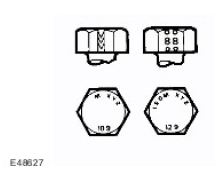
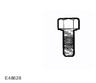

CAUTION: When electric arc welding on a vehicle, always disconnect the generator wiring to prevent the possibility of a surge of current causing damage to the internal components of the generator.
CAUTION: When electric arc welding on a vehicle, always disconnect the generator wiring to prevent the possibility of a surge of current causing damage to the internal components of the generator.
Copyright © Land Rover Ltd., 2005
All rights reserved. No part of this publication may be reproduced, stored in a retrieval system or transmitted in any form, electronic, mechanical, photocopying, recording or other means, without prior written permission of Land Rover Ltd., Banbury Road, Lighthorne, Warwick, CV35 0RG
This manual covers all aspects necessary in order to service the vehicle effectively.
The manual is structured into five main sections, General Information, Chassis, Powertrain, Electrical and Body and Paint with each section dealing with a specific part of a vehicle system.
Each of the five main sections contain sub-sections dealing with items which form a part of that specific system.
Pages at the start of the manual list all sections available. Each section has a contents list detailing, where applicable, Specifications, Description and Operation, Diagnosis and Testing, General Procedures and Repair Procedures.
Where components need to be removed or disassembled in sequence, each operation in the sequence will be identified numerically and also graphically in an accompanying illustration.
NOTE:
Dimensions quoted are to design engineering specifications with service limits quoted, where applicable.
The five main sections, together with the areas which they cover are given below:
Sub-section numbers appear after the initial section number, for example, Section 412-03 covers air conditioning, which is part of the electrical section.
In the number given above, the first digit of the number '4' indicates the section i.e. Electrical.
The second and third digits '12' of the number indicate the vehicle system i.e. Air Conditioning.
The last two digits of the number '03' indicate the part of the system covered by the sub-section i.e. Air Conditioning Compressor.
Appropriate service methods and correct repair procedures are essential for the safe, reliable operation of all motor vehicles, as well as the safety of the person doing the work. This manual provides general directions for accomplishing service and repair work with tested effective techniques. Following them will help assure reliability.
There are numerous variations in procedures, techniques, tools, and parts for servicing vehicles, as well as in the skill of the person doing the work. This manual cannot possibly anticipate all such variations and provide advice or cautions as to each. Accordingly, anyone who departs from the instructions provided in the manual must first establish that neither personal safety or vehicle integrity is compromised from choices of methods, tools or parts.
This manual has been written in a format that is designed to meet the needs of Land Rover technicians worldwide and to assist them in the efficient repair and maintenance of Land Rover vehicles.
This manual provides descriptions and methods for accomplishing adjustment, service and repair work using tested and effective procedures. Following these procedures will help ensure product reliability.
The Special Tool(s) Table provided at the beginning of each procedure lists the special tool(s) required to carry out repair operations within that specific procedure. Wherever possible, illustrations are provided which will assist technicians in identifying the special tool(s) required and also showing such tool(s) in use.
Special tools may be obtained from the manufacturer, SPX Tools, the addresses of their branches will be found in the Special Tools Glossary contained within this Section.
Appropriate service methods and correct repair procedures are essential for the safe and reliable operation of all motor vehicles as well as ensuring the personal safety of the individual carrying out the work.
This manual cannot possibly anticipate all such variations and provide advice or cautions as to each. Any person who departs from the instructions provided in this manual must first establish that they compromise neither their personal safety nor the vehicle integrity by their choice of methods, tools or parts.
Individuals who undertake their own repairs should have some skill or training and limit repairs to components which could not affect the safety of the vehicle or its passengers. Any repairs required to safety critical items such as steering, brakes, suspension or supplemental restraint system should be carried out by a Land Rover Dealer. Repairs to such items should NEVER be attempted by untrained individuals.
As you read through this manual, you will come across Warnings, Cautions and Notes. A Warning, Caution or Note is placed at the beginning of a series of steps. If the warning, caution or note only applies to one step, it is placed at the beginning of the specific step after the step number.
Warnings, Cautions and Notes have the following meanings:
Warning: Procedures which must be followed to avoid the possibility of personal injury.
Caution: Calls attention to procedures which must be followed to avoid damage to components.
Note: Gives helpful information.
References to the Left Hand (LH) or Right Hand (RH) side given in this manual are made when viewing the vehicle or unit from the rear.
The vehicle is equipped with a number of electronic control systems to provide optimum performance of the vehicle's systems.
Diagnostic Equipment (T4) is available and must be used where specified. The use of this equipment will assist with the fault diagnostic abilities of the Dealer workshop. In particular, the equipment can be used to interrogate the electronic systems for diagnosis of faults which may become evident during the life of the vehicle.
This manual is produced as a reference source to supplement T4.
Features of the equipment include:
Operations covered in this manual do not include reference to testing the vehicle after repair. It is essential that work is inspected and tested after completion and if necessary, a road test of the vehicle is carried out, particularly where safety related items are concerned.
Land Rover parts are manufactured to the same exacting standards as the original factory fitted components. For this reason, it is essential that only genuine Land Rover parts are used during maintenance or repair.
Attention is particularly drawn to the following points concerning repairs and the fitting of replacement parts and accessories.
Safety features and corrosion prevention treatments embodied in the vehicle may be impaired if other than Land Rover recommended parts are fitted. In certain territories, legislation prohibits the fitting of parts not to manufacturer's specification. Torque wrench setting figures, where given, must be adhered to and locking devices, where specified must be used. If the efficiency of a locking device is impaired during removal it must be replaced.
Owners purchasing accessories whilst travelling abroad must ensure that the accessory and its fitted location on the vehicle conform to legal requirements.
The terms of the vehicle warranty may be invalidated by the fitting of parts other than those recommended by Land Rover.
NOTE:
The fitting of non-approved Land Rover parts and accessories or the carrying out of non-approved alterations or conversions may be dangerous. Any of the foregoing could affect the safety of the vehicle and occupants; also, the terms and conditions of the vehicle warranty may also be invalidated.
All Land Rover recommended parts have the full backing of the vehicle warranty.
Land Rover Dealers are obliged to supply only Land Rover recommended parts.
Land Rover are constantly seeking to improve the specification, design and production of their vehicles and alterations take place accordingly. Whilst every effort is made to ensure the accuracy of this Manual, it should not be regarded as an infallible guide to current specifications of any particular vehicle.
This Manual does not constitute an offer for sale of any particular vehicle. Land Rover dealers are not agents of Land Rover and have no authority to bind the manufacturer by any expressed or implied undertaking or representation.
When working on a vehicle in the workshop always make sure that:
CAUTION: When electric arc welding on a vehicle, always disconnect the generator wiring to prevent the possibility of a surge of current causing damage to the internal components of the generator.
 WARNING: It is essential that a period of 10 minutes elapses after the battery is disconnected before any work is undertaken on any part of the SRS system.
WARNING: It is essential that a period of 10 minutes elapses after the battery is disconnected before any work is undertaken on any part of the SRS system.
CAUTION: Prior to carrying out any procedures which involve disconnecting/ or connecting the battery, refer to the Electrical Section of this manual - Battery disconnection/connection. For additional information, refer to Battery (414-01 Battery, Mounting and Cables)
CAUTION: A discharged battery condition may have been caused by an electrical short circuit. If this condition exists there will be an apparently live circuit on the vehicle even when all normal circuits are switched off. This can cause arcing when the jumper cables are connected.
CAUTION: While it is not recommended that a vehicle is jump started, it is recognized that this may occasionally be the only practical way to mobilize a vehicle. Reference should be made to the following.
CAUTION: It is advisable not to use starter/charger sets for jump starting but if this is unavoidable, make sure that the sets are not used in the 'START' mode.
Following jump starting of a disabled vehicle, the discharged battery must be checked for serviceability and recharged as soon as possible to avoid permanent damage.
Do not rely on the generator to restore a discharged battery. For a generator to recharge a battery, it would take in excess of eight hours continuous driving with no additional loads placed on the battery.
Trickle charging (defined as voltages <16 volts) may be carried out with the battery connected. Make sure that the battery terminals are fully tightened prior to trickle charging.
CAUTION: Boost charging may only be carried out with the battery disconnected from the vehicle.
CAUTION: The vehicle has permanent four-wheel drive. The following towing instructions must be adhered to:
CAUTION: The brake servo and power assisted steering system will not be functional without the engine running. Greater pedal pressure will be required to apply the brakes and the steering system will require greater effort to turn the front road wheels. The vehicle tow connection should be used only in normal conditions, 'snatch' recovery should be avoided.
Towing the vehicle on all four wheels with driver operating steering and brakes.
Turn ignition key to position 1 to release steering lock.
Select neutral in main gearbox and transfer box.
Secure tow rope, chain or cable to front towing eyes.
Release the parking brake.
CAUTION: The steering wheel and/or linkage must be secured in the straight ahead position. Do not use the steering lock mechanism for this purpose.
If the front axle is to be trailed turn ignition key to position 1 to release steering lock.
Select neutral in main gearbox and transfer box.
CAUTION: Underbody components must not be used as lashing points.
Lashing/towing eyes are provided on front and rear of the chassis side members to facilitate the securing of the vehicle to a trailer or other means of transportation.
Position vehicle on trailer and apply the parking brake. Select neutral in main gearbox.
Where it is stated that bolts and screws may be re-used, the following procedures must be carried out:
CAUTION: DO NOT use a wire brush; take care that threads are not damaged.

An ISO metric bolt or screw made of steel and larger than 6 mm in diameter can be identified by either of the symbols ISO M or M embossed or indented on top of the bolt head.
In addition to marks identifying the manufacturer, the top of the bolt head is also marked with symbols indicating the strength grade e.g. 8.8, 10.9, 12.9, 14.9. Alternatively, some bolts and screws have the M and strength grade symbol stamped on the flats of the hexagon.

Encapsulated ('patched') bolts and screws have a thread locking agent applied to the threads during manufacture. Most thread locking agents are coloured, the band of colour extending for 360° around the thread. Some locking agents however, are neutral in colour and may not be so easily identified apart from a slightly darker area of thread where the locking agent has been applied. The locking agent is released and activated by the tightening process and is then chemically cured to provide the locking action.
Axle weights are not accumulative. The individual maximum axle weights and gross vehicle weights must not be exceeded.
NOTE:
EEC Kerb weight = Unladen weight + full fuel tank + 75 Kg (165lb).
| Vehicle axle weights - | ||||
|---|---|---|---|---|
| Standard | Standard | High load | High load | |
| Front axle | 1200 Kg | 2645 lb | 1200 Kg | 2645 lb |
| Rear axle | 1380 Kg | 3042 lb | 1500 Kg | 3307 lb |
| Maximum Gross Vehicle Weight (GVW) | 2400 Kg | 5291 lb | 2550 | 5622 lb |
| EEC Vehicle kerb weights | ||||
|---|---|---|---|---|
| Soft top | 1695 Kg | 3736 lb | 1699 Kg | 3745 lb |
| Pick-up | 1694 Kg | 3734 lb | 1698 Kg | 3743 lb |
| Hard top | 1746 Kg | 3849 lb | 1750 Kg | 3858 lb |
| Station wagon | 1793 Kg | 3952 lb | 1797 Kg | 3961 lb |
| Vehicle axle weights - | ||||
|---|---|---|---|---|
| Levelled | Levelled | Unlevelled | Unlevelled | |
| Front axle | 1200 Kg | 2645 lb | 1200 Kg | 2645 lb |
| Rear axle | 1750 Kg | 3858 lb | 1850 Kg | 4078 lb |
| Maximum Gross Vehicle Weight (GVW) | 2950 Kg | 6503 lb | 3050 Kg | 6724 lb |
| EEC Vehicle kerb weights | ||||
|---|---|---|---|---|
| Standard | Standard | High load | High load | |
| Soft top | 1872 Kg | 4127 lb | 1882 KG | 4149 lb |
| Pick-up | 1880 Kg | 4144 lb | 1890 Kg | 4166 lb |
| High capacity Pick-up | 1917 Kg | 4226 lb | 1927 Kg | 4248 lb |
| Hard top | 1913 Kg | 4217 lb | 1923 Kg | 4239 lb |
| Station wagon | 2018 Kg | 4448 lb | 2018 Kg | 4470 lb |
| County station wagon | 2054 Kg | 4528 lb | 2054 Kg | 455 lb |
| Vehicle axle weights - 130 models | ||
|---|---|---|
| Front axle | 1580 kg | 3483 lb |
| Rear axle | 2200 Kg | 4850 lb |
| Maximum Gross Vehicle Weight (GVW) | 3500 kg | 7716 lb |
| EEC Vehicle kerb weights | ||
|---|---|---|
| Crew cab and high capacity pick-up | 2086 Kg | 4598 lb |
| Vehicle axle weights - 90 models | ||||
|---|---|---|---|---|
| Station wagon | Station wagon | Utility | Utility | |
| Front axle | 1200 Kg | 2645 lb | 1200 Kg | 2645 lb |
| Rear axle | 1380 Kg | 3042 lb | 1500 Kg | 3307 lb |
| Maximum Gross Vehicle Weight (GVW) | 2400 Kg | 5291 lb | 2550 Kg | 5622 lb |
| EEC Vehicle kerb Weights | ||||
| Soft margin-top | 1770 Kg | 3402 lb | 1993 Kg | 4393 lb |
| Pick-up | 1770 Kg | 3402 lb | 1993 Kg | 4393 lb |
| Hard top | 1815 Kg | 4001 lb | 1987 Kg | 4380 lb |
| Vehicle axle weights | ||||
|---|---|---|---|---|
| Station wagon | Station wagon | Utility | Utility | |
| Front axle | 1200 Kg | 2645 lb | 1200 Kg | 2645 lb |
| Rear axle | 1750 Kg | 3858 lb | 1850 Kg | 4078 lb |
| Maximum Gross Vehicle Weight (GVW) | 2950 Kg | 6503 lb | 3050 Kg | 6724 lb |
| EEC Vehicle kerb Weights | Standard | Standard | Heavy duty | Heavy duty |
| Soft top | 1885 Kg | 4155 lb | 2080 Kg | 4585 lb |
| High capacity Pick-up | 1920 Kg | 4232 lb | 2122 Kg | 4678 lb |
| Hard top | 1920 Kg | 4232 lb | 2110 Kg | 4651 lb |
| Station wagon | 2055 Kg | 4530 lb | 2229 Kg | 4914 lb |
| Vehicle axle weights | ||
|---|---|---|
| Metric | Imperial | |
| Front axle | 1580 Kg | 3483 lb |
| Rear axle | 2200 Kg | 4850 lb |
| Maximum Gross Vehicle Weight (GVW) | 3500 Kg | 7716 lb |
| EEC Vehicle kerb Weights | Heavy duty | Heavy duty |
| Crew cab and high capacity pick-up | 2177 - 2286 Kg | 4667 - 5039 lb |
| Item | Metric | Imperial |
|---|---|---|
| Max. gradient (EEC Kerb weight) | 45° | |
| Approach angle | ||
| Soft Top and Pick-up (EEC Kerb weight) | 48° | |
| Hard top and Station wagon (EEC Kerb weight) | 51.5° | |
| Departure angle | ||
| Soft Top and Pick-up (EEC Kerb weight) | 49° | |
| Hard top and Station wagon (EEC Kerb weight) | 53° | |
| Wading depth | 500 mm | 20 in |
| Min. ground clearance (unladen) | ||
| Soft Top and Pick-up (EEC Kerb weight) | 191 mm | 7.5 in |
| Hard top and Station wagon (EEC Kerb weight) | 229 mm | 9.0 in |
NOTE: Departure angles do not account for the addition of a tow hitch.
| Item | Metric | Imperial |
|---|---|---|
| Max. gradient (EEC Kerb weight) | 45° | |
| Approach angle | 50° | |
| Departure angle | ||
| 110 Models | 35° | |
| 130 Models | 34° | |
| Wading depth | 500 mm | 20 in |
| Min. ground clearance (unladen) | 215 mm | 8.5 in |
| Item | Metric | Imperial |
|---|---|---|
| Overall length | ||
| Soft top and Pick-up | 3722 mm | 146.5 in |
| Hard top and Station wagon | 3883 mm | 152.9 in |
| Overall width | 1790 mm | 70.5 |
| Overall height | ||
| Soft top and Pick-up | 1965 mm | 77.4 in |
| Pick-up and Station wagon | 1963 mm | 77.3 in |
| Hardtop | 1972 mm | 77.6 in |
| Wheelbase | 2360 mm | 92.9 in |
| Track front/rear | 1486 mm | 58.5 in |
| Width between wheel boxes | 925 mm | 36.4 in |
| Item | Metric | Imperial |
|---|---|---|
| Overall length | ||
| Soft top and Pick-up | 4438 mm | 175 in |
| Hard capacity pick-up | 4631 mm | 182 in |
| Hardtop/station and county | 4599 mm | 181 in |
| Overall width | 1790 mm | 70.5 in |
| Overall height - | ||
| Non Japanese specification | 2035 mm | 80.1 in |
| Japanese specification | 2060 mm | 81.1 in |
| Wheelbase | 2794 mm | 110 in |
| Track front/rear | 1486 mm | 58.5 in |
| Width between wheel boxes | ||
| High capacity pick-up | 1090 mm | 43 in |
| All other models | 925 mm | 36.4 in |
| Item | Metric | Imperial |
|---|---|---|
| Overall length | 5132 mm | 202 in |
| Overall width | 1790 mm | 70.5 in |
| Overall height | 2035 mm | 80.1 in |
| Wheelbase | 3266 mm | 127 in |
| Track front/rear | 1486 mm | 58.5 in |
| Width between wheel boxes | 1090 mm | 43 in |
| Item | Metric | Imperial |
|---|---|---|
| Overall length | 4072 mm | 160.5 in |
| Overall width | 1790 mm | 70.5 in |
| Overall height | 2037 mm | 80.2 in |
| Wheelbase | 2360 mm | 92.9 in |
| Track front/rear | 1486 mm | 58.5 in |
| Width between wheel boxes | 925 mm | 36.4 in |
| Turning circle | 12.65 m | 41 ft 6 in |
Modern vehicles contain many materials and liquids which if not handled with care can be hazardous to both personal health and the environment. Also, many of the procedures associated with vehicle maintenance and repair involve physical hazards or other risks to health.
This subsection lists some of these hazardous operations and the materials and equipment associated with them. Precautions necessary to avoid these hazards are identified.
The list is not exhaustive and all operations and procedures and the handling of materials, should be carried out with health and safety in mind.
Before using any product the Materials Safety Data Sheet supplied by the manufacturer or supplier should be consulted.
WARNING: Many liquids and other substances used in motor vehicles are poisonous and should under no circumstances be consumed and should, as far as possible, be kept from contact with the skin. These liquids and substances include acid, anti-freeze, brake fluid, fuel, windscreen washer additives, lubricants, refrigerants and various adhesives.
For example - alkalis such as caustic soda used in cleaning materials; acids such as sulphuric acid used in batteries.
Both alkalis and acids are irritant and corrosive to the skin, eyes, nose and throat. They cause burns and can destroy ordinary protective clothing.
Avoid splashes to the skin, eyes and clothing. Wear suitable protective impervious apron, gloves and goggles. Do not breath mists.
Make sure access to eye wash bottles, shower and soap are readily available for splashing accidents.
Display Eye Hazard sign.
Highly flammable, explosive – observe No Smoking policy.
Used within the vehicle as safety restraints.
The inflator contains a high-energy propellant which, when ignited, produces a VERY HOT GAS (2500°C).
The gas inflator (generator) used in air bags is Sodium Azide. This material is hermetically sealed in each air bag module and is completely consumed during deployment. No attempt should be made to open an air bag inflator as this will lead to the risk of exposure to Sodium Azide. If a gas generator is ruptured, full protective clothing should be worn when dealing with the spillage.
After normal deployment, gloves and safety goggles should be worn during the handling process.
Deployed air bags should be disposed of in a plastic bag in accordance with local regulations at an approved chemical waste site.
Following any direct contact with Sodium Azide:
Air Bags - Do's
Air Bags - Do Not
Whenever work is being undertaken on the air suspension system, suitable eye protection must be worn.
Highly flammable, combustible – observe No Smoking policy.
Skin contact may result in frostbite.
Instructions given by the manufacturer must be followed. Avoid naked lights, wear suitable protective gloves and goggles.
If refrigerant comes into contact with the skin or eyes, rinse the affected areas with water immediately. Eyes should also be rinsed with an appropriate irrigation solution such as a solution of 9% Sodium Chloride and Purified Water. DO NOT RUB THE EYES AND SEEK IMMEDIATE MEDICAL ATTENTION.
Air Conditioning Refrigerant - Do Not
Many adhesives and sealants are highly flammable - OBSERVE NO SMOKING POLICY. These items, should be stored in flameproof cabinets in No Smoking areas. Cleanliness and tidiness in use should be observed, for example disposable paper covering benches. All adhesives and sealants should be dispensed from applicators where possible; containers, including secondary containers, should be labelled appropriately.
Many are irritant, sensitizing or harmful to the skin and respiratory tract. Some are eye irritants.
Skin and eye contact should be avoided and the manufacturer's instructions followed.
Cyanoacrylate adhesives (super-glues) MUST NOT contact the skin or eyes. If skin or eye tissue is bonded, cover with a clean moist pad and SEEK IMMEDIATE MEDICAL ATTENTION. Do not attempt to pull skin tissue apart. Use in well ventilated areas as vapors can cause irritation to the nose and eyes.
For two-pack systems see Resin-based and Isocyanate Adhesives/Sealers.
Follow manufacturers instructions.
Those based on polymer emulsions and rubber/latex may contain small amounts of volatile, toxic and harmful chemicals. Skin and eye contact should be avoided and adequate ventilation provided during use.
In the solid state, they are safe. In the molten state they may cause burns and health hazards may arise from the inhalation of toxic fumes.
Use appropriate protective clothing and a thermostatically controlled heater with a thermal cut-out and adequate extraction.
Mixing should be carried out in well ventilated areas as harmful or toxic volatile chemicals may be released.
Skin contact with uncured resins and hardeners can result in irritation, dermatitis, and absorption of toxic or harmful chemicals through the skin. Splashes can damage the eyes.
Provide adequate ventilation and avoid skin and eye contact.
See also Resin-based Adhesives
Individuals suffering from asthma or respiratory allergies should not work with or near these materials as sensitivity reactions can occur.
Over exposure is irritating to the eyes and respiratory system. Excessive concentrations may produce effects on the nervous system including drowsiness. In extreme cases, loss of consciousness may result. Long term exposure to vapour concentrations may result in adverse health effects.
Prolonged contact with the skin may lead to skin irritation and in some cases, dermatitis.
Splashes entering the eye will cause discomfort and possible damage.
Any spraying should preferably be carried out in ventilated booths which incorporate facilities for removing vapors and spray droplets from the breathing zone.
Wear appropriate gloves, eye and respiratory protection.
May be flammable when undiluted.
Vapors may be given off from coolant antifreeze when heated. Avoid breathing these vapors.
Antifreeze may be absorbed through the skin in toxic or harmful quantities. Antifreeze, if swallowed, can be fatal; SEEK IMMEDIATE MEDICAL ATTENTION.
See also Alkalis and Acids.
Gases released during battery charging are explosive. Always remove the battery from the vehicle prior to charging. Never use naked flames or allow sparks near charging or recently charged batteries. NEVER add acid to a battery, the chemical reaction produced will be violent and explosive. In cases of eye contact, wash affected area with
copious amounts of water and SEEK IMMEDIATE MEDICAL ATTENTION.
Make sure there is adequate ventilation during battery charging, observe NO SMOKING POLICY.
Always fit the correct grade and specification of brake pads and linings. When renewing pads and linings, always replace as complete axle sets.
Splashes to the skin and eyes are irritating and in the long term can be damaging, avoid prolonged skin contact. In cases of eye contact, wash affected area with copious amounts of water and SEEK IMMEDIATE MEDICAL ATTENTION.
All chemical materials should always be used with caution and stored and handled with care. They may be toxic, harmful, corrosive, irritant or highly flammable and give rise to hazardous fumes and dusts.
The effects of excessive exposure to chemicals may be immediate or delayed; briefly experienced or permanent; cumulative; superficial; life threatening; or may reduce life expectancy.
Some corrosion protection materials are highly flammable – observe NO SMOKING POLICY.
These materials are varied and the manufacturers instructions must always be followed. The materials may contain solvents, resins or petroleum products. Skin and eye contact should be avoided. They should only be sprayed in conditions of adequate ventilation and not in confined spaces.
Dust or powder produced during repair operations may be irritant, harmful or toxic. Avoid breathing dusts from powdery chemical materials or those arising from dry abrasion operations. Wear respiratory protection if ventilation is inadequate.
Fine dusts of combustible material can present an explosion hazard. Avoid explosive limits and sources of ignition.
Electric shock can result from the use of faulty electrical equipment or from the misuse of equipment in good condition.
Make sure that electrical equipment is maintained in good condition and frequently tested. Faulty equipment should be labelled and preferably removed from the work station.
Make sure that flexes, cables, plugs and sockets are not frayed, kinked, cut, cracked or otherwise damaged. If using cable reel extension equipment, ALWAYS ensure that the cable is fully unwound from the reel.
Make sure that electrical equipment and flexes do not come into contact with water.
Make sure that electrical equipment is protected by the correct rated fuse.
Never misuse electrical equipment and never use equipment which is in any way faulty. The results could be fatal.
Make sure that the cables of mobile electrical equipment cannot get trapped and damaged, such as in a vehicle hoist.
Make sure that the designated electrical workers are trained in basic First Aid.
In cases of electrocution:
These contain asphyxiating, harmful and toxic chemicals and particles such as carbon oxides, nitrogen oxides, aldehydes, lead and aromatic hydrocarbons. Engines should be run only under conditions of adequate exhaust extraction or general ventilation and not in confined spaces.
There may not be adequate warning of odour or of irritation before toxic or harmful effects arise. These may be immediate or delayed.
Soot, discomfort and irritation usually give adequate warning of hazardous fume concentrations.
The fibrous nature of surfaces and cut edges can cause skin irritation. This is usually a physical and not a chemical effect.
Precautions should be taken to avoid excessive skin contact through careful organization of work practices and the use of gloves.
Many of the materials found on or associated with the repair of vehicles are highly flammable. Some give off toxic or harmful fumes if burnt; others such as fluoroelastomers when burnt or damaged by excessive heat can break down and produce highly corrosive hydrofluoric acid - See Fluoroelastomers.
Should any material be in a burnt or overheated condition, handle with extreme caution and wear protective clothing when handling such items. Dispose of such material in accordance with local regulations.
Decontaminate and dispose of protective clothing immediately after use.
Observe strict fire safety when storing and handling flammable materials or solvents, particularly near electrical equipment or welding processes.
Make sure, before using electrical or welding equipment, that there is no fire hazard present.
Have a suitable fire extinguisher available when using welding or heating equipment.
Apart from meeting any legal requirements it is desirable for someone in the workshop to be trained in First Aid procedures.
Splashes in the eye should be flushed carefully with clean water for at least ten minutes.
Soiled skin should be washed with soap and water.
In case of cold burns, from alternative fuels, place affected area in cool to cold water.
Individuals affected by inhalation of gases and fumes should be removed to fresh air immediately. If effects persist, consult a doctor.
If liquids are swallowed inadvertently, consult a doctor giving him the information on the container or label. Do not induce vomiting unless this action is indicated on the label.
Many 'O' rings, seals, hoses, flexible pipes and other similar which appear to be manufactured from natural rubber are, in fact, made of synthetic materials called Fluoroelastomers.
Under normal operating conditions, these materials are safe and do not constitute a health hazard. However, if the materials are damaged by burning or exposure to excessive heat, they can break down and produce highly corrosive hydrofluoric acid.
WARNING: Contact with hydrofluoric acid can cause serious burns on contact with the skin. If skin contact does occur, carry out the following steps immediately: Remove any contaminated clothing. SEEK IMMEDIATE MEDICAL ATTENTION Irrigate affected area of skin with copious amounts of cold water or limewater for 15 to 60 minutes.
Used in sound and noise insulation. Cured foams used in seat and trim cushioning.
Unreacted components are irritating and may be harmful to the skin and eyes. Wear gloves and goggles.
Individuals with chronic respiratory diseases, asthma, bronchial medical problems, or histories of allergic diseases should not work in or near uncured materials.
The components, vapors or spray mists can cause direct irritation, sensitivity reactions and may be toxic or harmful.
Vapors and spray mists must not be inhaled. These materials must be applied with adequate ventilation and respiratory protection. Do not remove the respirator immediately after spraying, wait until the vapour/mists have cleared.
Burning of the uncured components and the cured foams can generate toxic and harmful fumes. Smoking, naked flames or the use of electrical equipment during foaming operations and until vapors/mists have cleared should not be allowed. Any heat cutting of cured foams or partially cured foams should be carried out in areas having suitable fume extraction equipment.
Avoid skin contact with fuel where possible. Should contact occur, wash the affected skin with soap and water.
Highly flammable - OBSERVE NO SMOKING POLICY.
Swallowing gasoline (petrol) can result in mouth and throat irritation and absorption from the stomach can result in drowsiness and unconsciousness. Small amounts can be fatal to children. Inhalation into the lungs, through vomiting, is a very serious hazard.
Gasoline (petrol) dries the skin and can cause irritation and prolonged or repeated contact may cause dermatitis; if it is allowed to enter the eyes, it will cause severe smarting. Wash affected area with copious amounts of water and SEEK IMMEDIATE MEDICAL ATTENTION.
Gasoline (petrol) may contain appreciable quantities of benzene, which is toxic upon inhalation and the concentration of vapors must be kept very low. High concentrations will cause eye, nose and throat irritation, nausea, headache, depression and symptoms of drunkenness. Very high concentrations will result in rapid loss of consciousness.
Make sure there is adequate ventilation when handling and using gasoline (petrol). Great care must be taken to avoid the serious consequences of inhalation in the event of vapour build up arising from spillages in confined spaces.
Special precautions apply to cleaning and maintenance operations on gasoline (petrol) storage tanks.
Gasoline (petrol) should not be used as a cleaning agent. It must not be siphoned by mouth.
Combustible.
Prolonged skin contact with high boiling point gas oils (diesel fuel) may cause serious skin disorders including skin cancer.
Inhalation into the lungs will cause internal bleeding - SEEK IMMEDIATE MEDICAL ATTENTION.
If swallowed, DO NOT induce vomiting - SEEK IMMEDIATE MEDICAL ATTENTION.
Used also as heating fuel, solvent and cleaning agent.
Flammable - OBSERVE NO SMOKING POLICY.
Irritation of the mouth and throat may result from swallowing. The main hazard from swallowing arises if liquid aspiration into the lungs occurs.
Liquid contact dries the skin and can cause irritation or dermatitis. Splashes in the eye may be slightly irritating.
In normal circumstances the low volatility does not give rise to harmful vapors. Exposure to mists and vapors from kerosene at elevated temperature should be avoided (mists may arise in dewaxing). Avoid skin and eye contact and make sure there is adequate ventilation.
If swallowed, DO NOT induce vomiting - SEEK IMMEDIATE MEDICAL ATTENTION.
Gases such as oxygen, acetylene, argon and propane are normally stored in cylinders at pressures of up to 138 bar (13800 kPa) (2000 lbf/in²) and great care should be taken in handling these cylinders to avoid mechanical damage to them or to the valve gear attached. The contents of each cylinder should be clearly identified by appropriate markings.
Cylinders should be stored in well ventilated enclosures, and protected from ice and snow or direct sunlight. Fuel gases, for example acetylene and propane should not be stored in close proximity to oxygen cylinders.
Care should be exercised to prevent leaks from gas cylinders and lines and also to avoid sources of ignition.
Only trained personnel should undertake work involving gas cylinders.
It is essential that all tools and equipment are maintained in good condition and the correct safety equipment is used where required.
Never use tools or equipment for any purpose other than that for which they were designed. Never overload equipment such as hoists, jacks, axle and chassis stands or lifting slings. Damage caused by overloading is not always immediately apparent and may result in a fatal failure the next time that the equipment is used.
Do not use damaged or defective tools or equipment, particularly high speed equipment such as grinding wheels. A damaged grinding wheel can disintegrate without warning and cause serious injury.
Wear suitable eye protection when using grinding, chiselling or sand blasting equipment.
Wear a suitable breathing mask when using abrasive blasting equipment or using spraying equipment.
Make sure there is adequate ventilation to control dusts, mists and fumes.
Always keep high pressure equipment in good condition, and regularly maintained, particularly at joints and unions.
Never direct a high pressure nozzle, for example diesel injector, at the skin as the fluid may penetrate to the underlying tissue and cause serious injury.
Always refer to the Jacking and Lifting section of this manual prior to raising the vehicle off the ground.
When vehicle is to be raised by means of a jack, ensure that it is standing on level ground, that parking brake is applied and wheels are chocked. ALWAYS use the recommended jacking points and ensure that vehicle jack has sufficient load capacity for the weight of the vehicle.
WARNING: Do not work on or under a vehicle supported only by a jack. Always support the vehicle on safety stands.
Ensure that hoists have sufficient load capacity for the weight of the vehicle.
There are many laws and regulations relating to health and safety in the use and disposal of materials and equipment in a workshop.
For a safe working environment and to avoid environmental pollution, workshops should be familiar, in detail, with the many health and safety laws and regulations within their country, published by both national and local authorities.
Avoid all prolonged and repeated contact with mineral oils. All lubricants and greases may be irritating to the eyes and skin.
Prolonged and repeated contact with engine oil will result in the removal of natural fats from the skin, leading to dryness, irritation and dermatitis. In addition, used engine oil contains potentially harmful contaminants which may cause skin cancer. Adequate means of skin protection and washing facilities must be provided.
Do not employ used engine oils as lubricants or for any application where appreciable skin contact is likely to occur.
This section provides general information which can help to reduce the environmental impacts from the activities carried out in workshops.
Many of the activities that are carried out in workshops emit gases and fumes which can contribute to global warming, depletion of the ozone layer and/or the formation of photochemical smog at ground level. By considering how the workshop activities are carried out, these gases and fumes can be minimised, thus reducing the impact on the environment.
Running car engines is an essential part of workshop activities and exhaust fumes need to be ventilated to atmosphere. However, the amount of time engines are running and the position of the vehicle should be carefully considered at all times, to reduce the release of poisonous gases and minimise the inconvenience to people living nearby.
Some of the cleaning agents used are solvent based and will evaporate rapidly to atmosphere if used carelessly, or if containers are left unsealed. All containers must be firmly closed when not required and solvent should be used sparingly. Wherever possible, solvents having a low toxicity and flammability should be selected. Always follow the instructions supplied by the solvent manufacturer. Similarly, many paints are solvent based and the spray should be used in such a way as to reduce emissions to a minimum.
It is illegal to release any refrigerant into the atmosphere. Discharge and replacement of these materials from air conditioning units should only be carried out using the appropriate equipment.
Most workshops will have two systems for discharging waste water - storm drains and foul drains. Storm drains should only receive clean water i.e. rainwater. Foul drains will accept many of the normal waste water i.e. washing water, detergents and domestic type waste BUT NOT oil, petrol, solvent, acids, hydraulic fluid, antifreeze and similar fluids. If in doubt, always consult the local authority or water company.
Every precaution must be taken to prevent spillage of oil, fuel, solvents etc., reaching the drains. All handling of such materials must take place well away from drains and preferably in an area with a suitable containing wall to prevent discharge into drains or watercourses. If a spillage occurs, it must be soaked up immediately using a spill kit where provided.
Special materials are available to absorb a number of different substances. They can be in granular form, ready to use and are supplied in suitable containers. Disposal of used spill absorbing material is dealt with in Waste management.
Oils, fuels and solvents etc. can contaminate any soil with which they come into contact. Such materials MUST never be disposed of by pouring on to soil and every precaution must be taken to avoid spillage reaching soil. Waste materials stored on open ground could either leak or have contaminating substances washed off them that would contaminate the land. Always store these materials in suitable skips or similarly robust containers.
Some sites may have a discharge consent for effluent discharge to the foul drain for a car wash etc. It is essential to know the types of effluent which are allowed to be discharged into the drain and to check the results of any monitoring carried out by the Water Company.
Where paint spraying operations are carried out it may be necessary to apply to the Local Authority for an air emissions licence to operate the plant. If such a licence is necessary, additional precautions will be necessary to comply with the requirements and the results of any air quality monitoring must be checked regularly.
Always adhere to the following:
Pollution can be reduced by careful handling, storage and disposal of all waste materials that occur on sites. Legislation makes it illegal to dispose of waste materials other than to licensed waste carriers and disposal sites.
This means that it is necessary to not only know what the waste materials are but also to have the necessary documentation and licences.
Ensure that waste materials are not poured down the drain or on to soil and are stored in such a way that they do not escape on to land or soil.
All waste must be segregated into individual types e.g. oils, metals, batteries, scrap components etc. This will prevent any reaction between different materials and assist in disposal.
Dispose of waste in accordance with the following guidelines:
Car alarm testing, panel beating, running engines, using air tools etc. are operations which invariably produce a large amount of noise. The location of such activities and also the time of day must be carefully considered having regard to the proximity of houses schools etc.
Some operations may produce high noise levels which could, in time, damage hearing. In these cases, suitable ear protection must be worn.
Solders are mixtures of metals such that the melting point of the mixture is below that of the constituent metals.
(normally lead and tin). Solder application does not normally give rise to toxic lead fumes, provided a gas/air flame is used. Oxy-acetylene flames should not be used, as they are much hotter and will cause lead fumes to be produced.
Some fumes may be produced by the application of any flame to surfaces coated with grease, and inhalation of these should be avoided.
Removal of excess solder should be undertaken with care, to make sure that fine lead dust is not produced, which can give toxic effects if inhaled. Respiratory protection may be necessary.
Solder spillage and filings should be collected and removed promptly to prevent general air contamination by lead.
High standards of personal hygiene are necessary in order to avoid ingestion of lead or inhalation of solder dust from clothing.
For example acetone, white spirit, toluene, xylene, trichloroethane.
Used in cleaning and dewaxing materials, paints, plastics, resins and thinners.
Some may be highly flammable or flammable.
Skin contact will degrease the skin and may result in irritation and dermatitis following repeated or prolonged contact. Some can be absorbed through the skin in toxic or harmful quantities.
Splashes in the eye may cause severe irritation and could lead to loss of vision.
Brief exposure of high concentrations of vapors or mists will cause eye and throat irritation, drowsiness, dizziness, headaches and, in the worst circumstances, unconsciousness.
Repeated or prolonged exposure to excessive but lower concentrations of vapors or mists, for which there might not be adequate warning indications, can cause more serious toxic or harmful effects.
Aspiration into the lungs, for example through vomiting, is the most serious consequence of swallowing.
Avoid splashes to the skin, eyes and clothing. Wear protective gloves, goggles and clothing if necessary.
Make sure there is good ventilation when in use, avoid breathing fumes, vapors and spray mists and keep containers tightly sealed. Do not use in confined spaces.
When spraying materials containing solvents, for example paints, adhesives, and metal coatings, use extraction ventilation or personal respiratory protection in the absence of adequate general ventilation.
Do not apply heat or flame except under specific and detailed manufacturers instructions.
CAUTION: Never improvise lifting tackle.
There is always a danger when loads are lifted or suspended. Never work under an unsupported, suspended or raised load, for example a suspended engine.
Always make sure that lifting equipment such as jacks, hoists, axle stands and slings are adequate and suitable for the job, in good condition and regularly maintained.
In common with many other manufacturers vehicles, some components installed to Land Rover vehicles have seals, 'O' rings or gaskets which contain a material known as 'Viton'.
Viton is a fluoroelastomer, that is a synthetic rubber type which contains Fluorine. Although Viton is the most well known fluoroelastomer, there are others, including Fluorel and Tecmoflon.
When used under design conditions fluoroelastomers are perfectly safe. If, however, they are exposed to temperatures in excess of 400°C, the material will not burn, but will decompose, and one of the products formed is hydrofluoric acid.
This acid is extremely corrosive and may be absorbed directly, through contact, into the general body system. WHERE CASES OF SKIN CONTACT OCCUR, SEEK IMMEDIATE MEDICAL HELP.
O-rings, seals or gaskets which have been exposed to very high temperatures will appear charred or as a black sticky substance.
DO NOT, under any circumstances touch them or the attached components.
Enquiries should be made to determine whether Viton or any other fluoroelastomer has been used in the affected O-ring, seal or gasket. If they are of natural rubber or nitrile there is no hazard. If in doubt, be cautious as the material may be Viton or any fluoroelastomer.
If Viton or any other fluoroelastomers have been used, the affected area should be decontaminated before the commencement of work.
Disposable heavy duty plastic gloves should be worn at all times, and the affected area washed down using wire wool and a limewater (calcium hydroxide) solution to neutralise the acid before disposing of the decomposed Viton residue and final cleaning of the area. After use, the plastic gloves should be discarded carefully and safely.
Welding processes include Resistance Welding (Spot Welding), Arc Welding and Gas Welding.
This process may cause particles of molten metal to be emitted at a high velocity, and the eyes and skin must be protected.
This process emits a high level of ultra-violet radiation which may cause arc-eye and skin burns to the operator and to other persons nearby. Gas-shielded welding processes are particularly hazardous in this respect. Personal protection must be worn, and screens used to shield other people.
CONTACT LENS WEARERS ARE ADVISED TO REVERT TO ORDINARY SPECTACLES WHEN ARC WELDING as the arc spectrum is believed to emit microwaves which dry out the fluid between the lens and the eye. This may result in blindness when the lens is removed from the eye.
Metal spatter will also occur, and appropriate eye and skin protection is necessary.
The heat of the welding arc will produce fumes and gases from the metals being welded, the rods and from any applied coatings or contamination on the surfaces being worked on. These gases and fumes may be toxic and inhalation of these should be avoided. The use of extraction ventilation to remove the fumes from the working area may be necessary particularly in cases where the general ventilation is poor, or where considerable welding work is anticipated. In extreme cases or confined spaces where adequate ventilation cannot be provided, air-fed respirators may be necessary.
CAUTION: Some of the components installed to the vehicle e.g. the interior cross beam and underbonnet cross member are manufactured from magnesium alloy. On no account should any welding operations be attempted on these components.
Oxy-acetylene torches may be used for welding and cutting, and special care must be taken to prevent leakage of these gases, with consequent risk of fire and explosion.
The process will produce metal spatter and eye and skin protection is necessary.
The flame is bright, and eye protection should be used, but the ultra-violet emission is much less than that from arc welding, and lighter filters may be used.
The process itself produces few toxic fumes, but such fumes and gases may be produced from coatings on the work, particularly during cutting away of damaged body parts, and inhalation of the fumes should be avoided.
In brazing, toxic fumes may be produced from the metals in the brazing rod, and a severe hazard may arise if brazing rods containing cadmium are used. In this event particular care must be taken to avoid inhalation of fumes and expert advice may be required.
SPECIAL PRECAUTIONS MUST BE TAKEN BEFORE ANY WELDING OR CUTTING TAKES PLACE ON VESSELS WHICH HAVE CONTAINED COMBUSTIBLE MATERIALS, FOR EXAMPLE BOILING OR STEAMING OUT OF FUEL TANKS.
Decals showing warning symbols will be found on various vehicle components.
These decals must not be removed. The warnings are for the attention of owners/operators and persons carrying out service or repair operations on the vehicle.
Special service tools have been developed to facilitate removal, dismantling and assembly of mechanical components in a cost effective and time efficient manner. The use of such special tools also helps prevent the potential for damage to components.
Some operations described in this manual cannot be carried out properly without the aid of the relevant service tools.
All orders and enquiries from the United Kingdom and European countries except Germany, Austria, Switzerland and Spain and countries not in the following list should be sent direct to:
SPX UK Ltd.,
Genoa House,
Everdon Park,
Daventry,
Northants,
NN11 5YJ
England
Tel: 0044 (0) 1327 303467/303455
Fax: 0044 (0) 1327 706632
e-mail: spxsalesuk@servicesolutions.spx.com
Overseas orders for the following countries should be placed with the local distributor.
SPX Europe GMBH,
Porschestrasse 4,
63512 Hainburg,
Germany
Tel: 0049 61829590
Fax: 0049 6182959299
SPX Iberica SA,
C/Francisco Aritio,
158 nave 72 (Nudo Oeste),
19004 Guadalajara,
Spain
Tel: 0034 949208381
Fax: 0034 949208327
SPX Corporation
665, Eisenhower Drive,
Owatonna,
MN 55060,
USA
Tel: 0018 772979110
Fax: 0018 005787375
SPX Australia,
28, Clayton Road,
Notting Hill,
Victoria 3168,
Australia
Tel: 0061 00395446222
Fax: 0061 00395445222
e-mail: sales@spx.com.au
Jatek Ltd.,
5 - 53, Minawacho 2-chome,
Kohoku-ku,
Yokohama,
Kanagawa 223-0051,
Japan
Tel: 0081 455627700
Fax: 0081 455627800